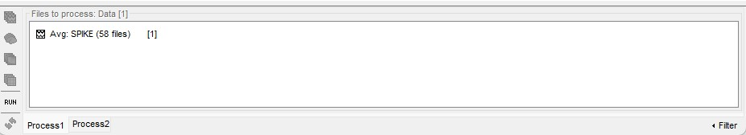
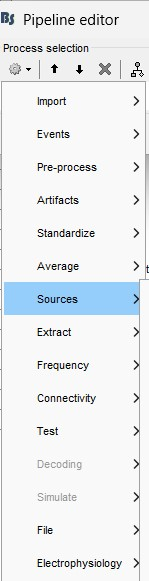
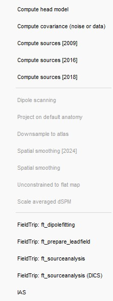
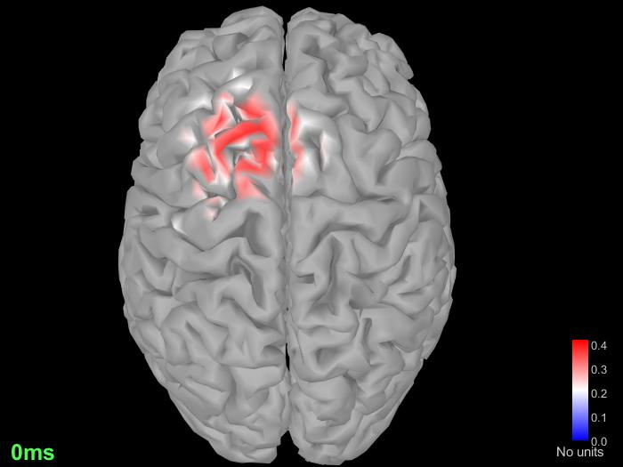
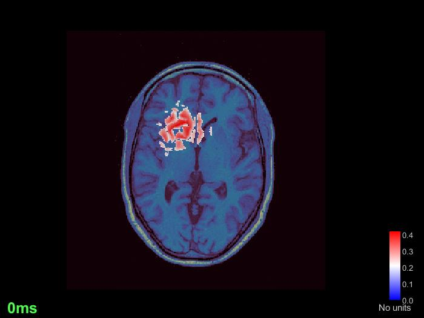
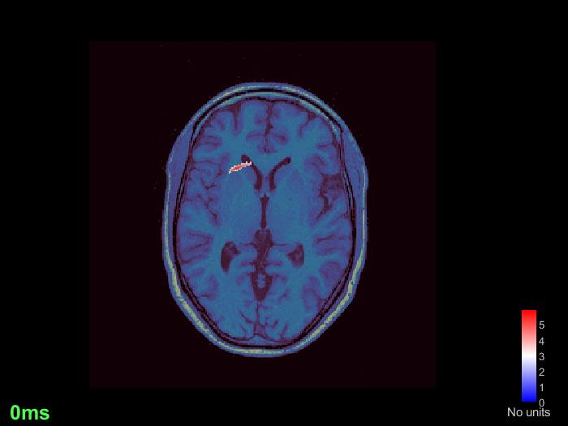
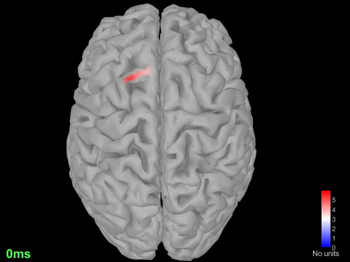

Brainstorm Tutorial : Source estimation through IAS algorithm¶
The purpose of this section it’s to explain how to estimate brain activity accounting for scalp recordings using the open-source application Brainstorm. The dataset used for this tutorial can be downloaded directly from the Brainstorm download page.. _a link: https://neuroimage.usc.edu/bst/download.php (sample_epilepsy.zip).
Dataset description¶
This tutorial dataset was acquired in a patient who suffered from focal epilepsy at the Epilepsy Center Freiburg, Germany. The EEG data distributed here was recorded at 256Hz, using a Neurofile NT digital video-EEG system with 128 channels and a 16-bit A/D converter. The signal was filtered in the recording system with a high-pass filter with a time constant of 1 second (cutoff frequency ~ 0.16Hz) and a low-pass filter with a cutoff frequency of 344 Hz. The spikes were marked with Brainstorm by the epileptologists at the Epilepsy Center in Freiburg.
Note
WARNING
Please for the anatomy import and the pre-processing of the dataset take into consideration the Brainstorm tutorial : https://neuroimage.usc.edu/brainstorm/Tutorials/Epilepsy#Source_analysis:_Surface.
Source Estimation¶
Method¶
### IAS Algorithm
The Iterative Alternating Sequential (IAS) algorithm is based on an iterative scheme that alternatively updates the dipole moments Q by solving a linear least squares problem using a priorconditioned CGLS algorithm with sutable stopping condition and updating the hyperparameter theta by an explicit formula. The algorithm requires minimal user provided input parameters:
-the estimated signal to noise-ratio (SNR); -the focality parameter pf the reconstructed activity; -the cut off parameter.
Note
If more theoretical information about the algorithm are needed click here.
Running the Algorithm¶
“Import Data”:
For running the algorithm import in the Pipeline editor of Brainstorm (Process 1) the file “Avg : SPIKE(58files)”. This file contains the epoches from which it’s possible to reconstruct the dipole sources;

Run IAS Algorithm:
Then go to Add process > run process Sources > IAS;
 
Configure Parameters:
Select the SNR (amplitude) = 9.00, the cut off = 0.90 and the Focality parameter = 0.1 that promotes a wider focality;
It creates a shared inversion kernel and a source link for each file in the folder;
Visualize Results:
Double-click on the source file for the average.
To display the same information re-interpolated in the volume, right-click on the source file > Cortical activation > Display on MRI.
Let’s try another value for the focality parameter to see hoe it affects the source estimation.
Select Run in the Pipeline editor Process 1 > Add process > run process Sources > IAS > Select the Focality parameter = 0.001 that promotes a tighter focality.
 
It’s possible from the images see how the Focality parameter impacts on the precision of the source estimation.
Note
Experiment with different values for the Focality Parameter to observe its impact on source estimation precision.
Conclusion¶
This tutorial demonstrates the source estimation process using the IAS algorithm in Brainstorm. Experimenting with different parameters, including advanced options, allows you to optimize source estimation precision for your specific dataset.